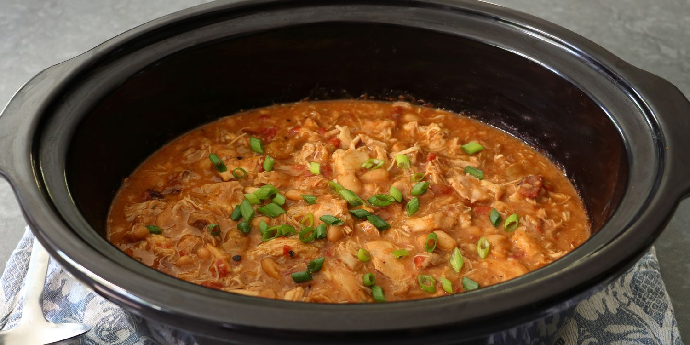

Si la recette ne vous plaît pas, retourner vers nos autres recettes : Accueil
Voici une image de notre beau plat :

Photo magnifique du poulet du Mississipi de John Mitzewich.
Ingrédients :
3 pounds boneless skinless chicken thighs
1 (1-ounce) packet powdered au jus gravy mix
1 (1/2 ounce) packet powdered ranch dressing mix
1 tablespoon chili powder
2 (15-ounce) cans white kidney beans (cannellini beans), drained
1/2 cup pepperoncini pepper brine (from the jar)
1 (15-ounce) can fire-roasted diced tomatoes
1/2 cup sliced pepperoncini peppers
1 stick unsalted butter, sliced into 8 pieces
Etapes :
Step 1 : Place chicken thighs into a slow cooker. Sprinkle over the powdered au jus gravy mix, ranch dressing, and chili powder. Top with cannellini beans, pepperoncini pepper brine, fire roasted diced tomatoes, sliced pepperoncini peppers, and butter.
Step 2 : Cover, and cook until chicken thighs are fork tender, on High for 3 to 4 hours or on Low for 6 to 8 hours. During the cooking time, use tongs or a long spoon to stir and redistribute the ingredients every hour or so.
Step 3 : Once chicken is tender, transfer chicken thighs to a bowl. Use a pair of the kitchen scissors to cut chicken thighs into about 1-2-inch pieces. Transfer chicken thighs back into the chili in the slow cooker, and stir to combine. Reduce heat setting to warm mode, and taste for seasoning before serving.